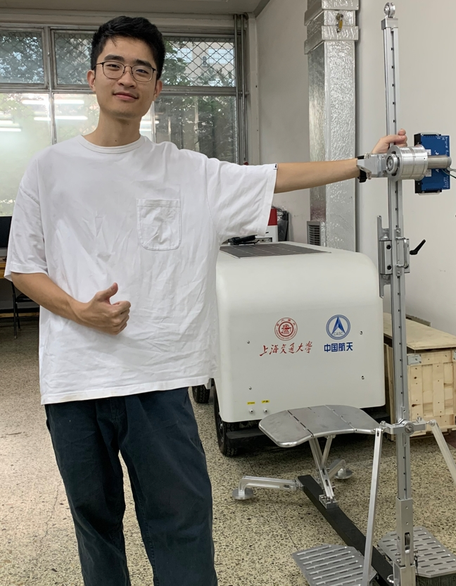

About Me

Here is Minhui Ye (叶旻辉).
I am a graduate student at Guangdong University of Technology, working in the Biomimetic and Intelligent Robotics Lab under the joint supervision of Prof. Yisheng Guan and Prof. Tao Zhang (Beihang University). I will complete my M.Eng. in June 2026.
My research focuses on planetary drilling robotics, spanning mechanism design, real-time embedded control, motion planning, and deep learning. I led the development of a 9-DOF multi-rod drilling robot for deep regolith sampling, and delivered a −190 °C vacuum temperature monitoring system for a leading aerospace institute.
Seeking Opportunities · Available July 2026
Aerospace & Special Equipment — Spacecraft mechanisms, space robotics, extreme-environment instrumentation
Industrial Automation & Motion Control — Servo drives, fieldbus communication, multi-axis systems, non-standard production lines
Robotics & Embodied Intelligence — System integration, hardware-software co-development, control algorithms
5 published papers
5 invention patents
4 research projects
1 national scholarship
Projects View Details →
Multi-Rod Planetary Regolith Drilling Robot
9-DOF deep-regolith sampling system. Integrated control platform (EtherCAT + Modbus, FSM-based process management), Petri-net-based cooperative scheduling, multi-component coupled drilling-load model (±18% prediction error), and physics-guided online formation identification (F1 = 0.736, +16.7pp over baseline).
Prototype 2 Patents 2 SCI Papers 1 EI PaperVacuum-Cryogenic Drill Temperature Monitoring System
Full delivery of a −190 °C vacuum temperature monitoring solution for lunar water-ice drilling: 10-channel micro-thermocouple embedding, STM32-based multi-channel scanner, cross-platform acquisition software (100 Hz, 5M+ data points), and thermal-structural coupled verification.
Prototype 1 Patent 1 Software CRCompact EtherCAT Servo Drive Development
Compact servo drive for brushless motors with FOC algorithm, EtherCAT communication, and cascade control (torque / velocity / position). STM32-based, supporting real-time multi-axis coordination for drilling robot actuators.
PCB Design FOC EtherCATPortable Folding Hand-Held Drill for Astronaut Use
Foldable hand-held drill stand for astronaut coring. Rope-drive auto-feed module, triple-fold frame, motor/drive selection (Maxon + Elmo), simulation-based verification.
Engineering PrototypeNews
Education
M.Eng. in Instrumentation Science & Technology Top 2%
Guangdong University of Technology · GPA 3.84 / 5.0
Research: Planetary drilling robotics, embedded control, deep learning. Supervised by Prof. Guan & Prof. Zhang.
B.Eng. in Measurement & Control Technology Top 5%
Guangdong University of Technology · GPA 3.62 / 5.0
Embedded Systems (98), PLC (96), Measurement Circuits (94), Precision Instrument Design (90)
Research Interests
Technical Skills
Get in Touch
I am open to research collaboration, engineering opportunities, and conversations about robotics, space exploration, or anything in between.